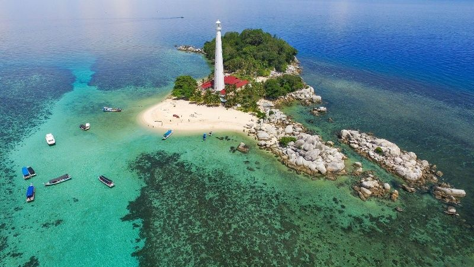

Wisata? Di Indonesia Aja
Ragam Wisata Tanjung Pandan, Belitung

Tanjung Pandan adalah ibu kota kabupaten Belitung yang memiliki anugerah keindahan pantainya. Objek wisata di Tanjung Pandan Belitung ini cukup beragam, namun yang paling terkenal di sini adalah pasir putih dengan susunan batu granit yang besar sehingga membuat suatu daya tarik bagi wisatawan.
Rata-rata objek wisata di Tanjung Pandan Belitung ini berjarak kurang lebih 20 menit antar objek wisata. Namun ada juga berjarak 2-3 jam ke arah selatan Tanjung Pandan Belitung. Berikut beberapa objek wisata Belitung yang patut Anda kunjungi.
-
Pantai Tanjung Tinggi
Pantai Tanjung Tinggi ini berada di sisi utara Pulau Tanjung Pandan dengan memiliki keunikan dan daya tariknya yaitu pasir putih dan batu granit setinggi rumah. Pantai Tanjung Tinggi adalah pantai yang paling terkenal di Belitung. Pasir & granit batu putih dari semua ukuran bongkahan besar akan membuat anda bertanya-tanya dari mana semua batu-batu granit itu berasal. Anda bahkan dapat naik pada bebatuan tersebut atau masuk ke celah bebatuan raksasa, layaknya adegan dalam film Laskar Pelangi.
-
Pantai Tanjung Kelayang
Ada 2 sisi, di pantai timur terutama berpasir, atau barat yang lebih berbatu. Formasi batuan yang tidak besar, tetapi beberapa dari batu tersebut berada di tengah laut dan berkumpul seperti sebuah pulau kecil yang mengapung. Di sisi timur pantai tanjung tinggi ini banyak di jumpai perahu nelayan yang tertambat.
-
Pantai Tanjung Binga
Di Pantai Tanjung Binga ini bukan pantai biasa seperti di Tanjung Tinggi, karena pantai ini merupakan perkampungan nelayan dengan pemandangan perahu nelayan. Di Pantai Tanjung Binga ini terdapat dermaga yang merupakan pusat bongkar muat para nelayan Belitung, dari dermaga ini juga Anda bisa menyewa perahu untuk tour ke pulau-pulau.
-
Pantai Tanjung Pendam
Disebut Pantai Tanjung Pendam karena pantai ini berada di kota Tanjung Pandan. Di Pantai Tanjung Pendam, penduduk setempat menghabiskan waktu sore atau malam hari bersama keluarga dan sanak famili untuk melihat keindahan sunset dari pantai ini. Di Pantai Tanjung Pendam ini juga terdapat taman bermain dan juga restoran seafood bagi pengunjung.
-
Pulau Lengkuas
Pulau Lengkuas adalah pulau terluar di antara pulau-pulau kecil lainnya. Di pulau ini terdapat mercusuar dan Anda bisa naik ke atas mercusuar ini untuk melihat keindahan seluruh pulau ini. Di Pulau Lengkuas ini Anda juga dapat melakukan kegiatan snorkling untuk menikmati keindahan terumbu karang Belitung.
-
Pulau Burung
Ketika menuju Pulau Burung ini, Anda akan disuguhkan keindahan batu granit besar yang bertumpuk menyerupai kepala burung. Dan yang pasti di sini Anda akan dimanjakan juga oleh jernihnya air laut dan hamparan pasir putih.
Setelah Anda mengunjungi pulau-pulau tersebut, belum sempurna bila wisata bahari di Pulau Belitung Anda satu hari ini bila belum ditutup oleh pemandangan sunset yang cantik. Ada baiknya sebelum kembali Anda menyempatkan menyaksikan sunset dari objek wisata Pantai Tanjung Pandan Belitung ini. Karena sunset dari Pantai Tanjung Kelayang ini sangat cantik dengan pemandangan sunset ditambah perahu nelayan yang tertambat dan juga aktivitas nelayan yang hilir mudik di pantai ini.